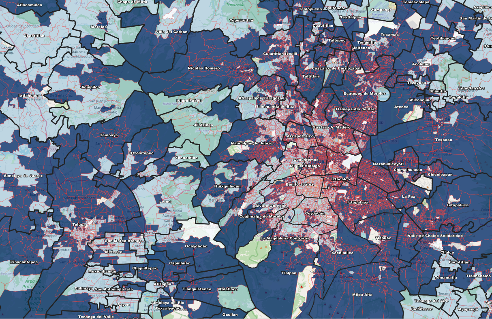

Inteligencia Ciudadana: Cruzamos Abstencionismo, Riesgo Social y Seguridad para redefinir tu estrategia.
🔴 LÍNEAS ROJAS: Sección Electoral.
🔵 ÁREAS AZULES: Alta Abstención Electoral (La Causa del Quiebre).
AVISO DE EXCLUSIVIDAD: El acceso interactivo a la base de datos completa **es solo para clientes**. La demostración se realiza ÚNICAMENTE en sesiones privadas para asegurar la confidencialidad de la estrategia.

Si eres líder, empresario o autoridad, hablemos de cómo mapear contigo. Este demo es solo la punta del iceberg.
SOLICITAR SESIÓN ESTRATÉGICAContacto Directo: politeiacmaps@gmail.com | Tel: 5589342136